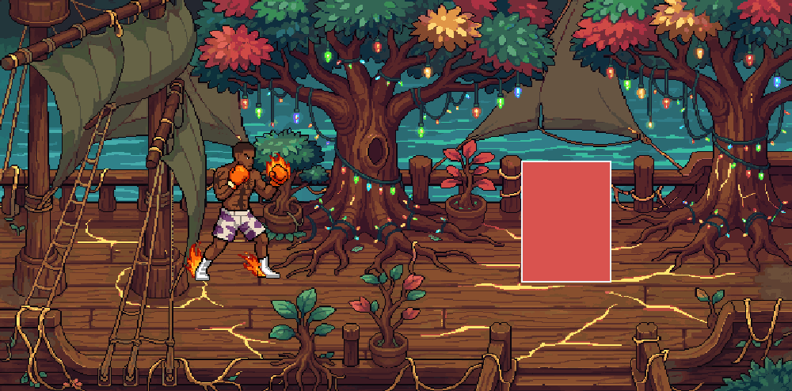
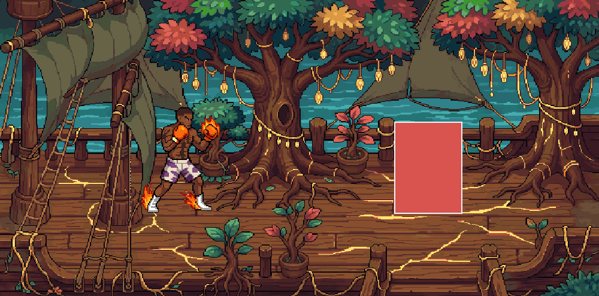

Revised scene · Christmas lights
Preview only — live combat unchanged. Colored bulbs, dark sockets and connecting wires replace the golden decorations. Branch, the enemy placeholder and the fight layout are preserved.

The red block remains the existing enemy placeholder, not proposed enemy art.
Previous preview
